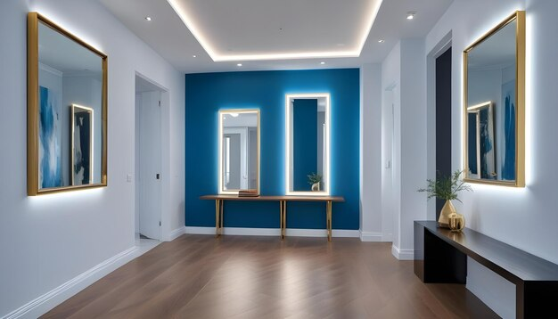
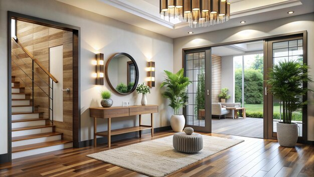
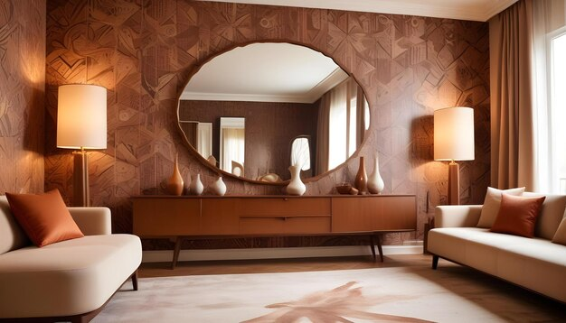
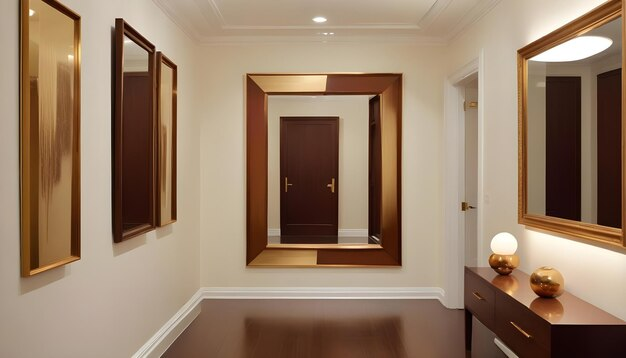
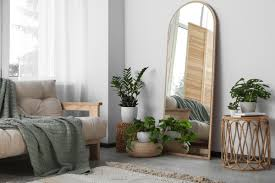

आइनों का रणनीतिक उपयोग करें, स्थान और प्रकाश को बढ़ाने के लिए
आइने एक डिज़ाइनर के लिए वह गुप्त हथियार हैं जो जगह को बड़ा और अधिक रोशन महसूस करा सकते हैं। एक खिड़की के सामने एक आइना रखने से कमरे में प्राकृतिक रोशनी का प्रतिबिंब बढ़ता है, जिससे यह बड़ा और खुला महसूस होता है। छोटे कमरों या गलियारों में, आइनों का उपयोग करके आप दृश्यात्मक रूप से क्षेत्र का विस्तार कर सकते हैं। बड़े आइनों या छोटे आइनों के संग्रह का उपयोग करें, जो एक सजावटी तत्व के रूप में कार्य करते हैं, जबकि प्रकाश और गहराई को भी बढ़ाते हैं। आइनों की फ्रेमिंग भी आपके सजावट शैली को पूरा कर सकती है, जिससे डिज़ाइन का एक और स्तर जोड़ा जा सकता है।
- दिखाई देने वाले क्षेत्र को बढ़ाएँ

- आकर्षक छलावा: शीशे गहराई और खुलापन का भ्रम पैदा करते हैं। एक बड़े शीशे को दीवार पर लगाने से कमरे को बड़ा और ज्यादा खुला महसूस कराया जा सकता है।
- स्थान लगाने के सुझाव: शीशों को खिड़कियों के सामने रखें ताकि वे प्राकृतिक रोशनी और दृश्य को दर्शा सकें, जिससे कमरे का आकार visually बड़ा महसूस हो सकता है।
- प्राकृतिक रोशनी बढ़ाएँ

- प्रकाश का परावर्तन: शीशे प्रकाश को परावर्तित करते हैं, जिससे कमरे के अंधेरे हिस्से उजागर होते हैं। शीशों को ऐसी जगह पर रखें जहां वे खिड़कियों या लाइट फिक्स्चर्स से प्राकृतिक रोशनी पकड़ सकें, इससे पूरे कमरे की चमक बढ़ जाएगी।
- सही स्थान: शीशों को लाइट सोर्सेज के पास या उनके सामने लगाएं ताकि रोशनी का वितरण बढ़ सके। ऐसे स्थानों पर शीशे न लगाएं जहां वे तीखी कृत्रिम रोशनी को सीधे आंखों में परावर्तित करें।
- कमरे का संतुलन और प्रवाह सुधारें

- दृश्य समरूपता: शीशे कमरे में दृश्य संतुलन बनाने में मदद कर सकते हैं। उदाहरण के लिए, अगर कमरे के एक तरफ बहुत सारा फर्नीचर है, तो सामने की दीवार पर शीशा लगाकर दृश्य संतुलन सुधार सकते हैं।
- केंद्र बिंदु:शीशों का उपयोग केंद्र बिंदु बनाने या वास्तुशिल्पीय विशेषताओं को उजागर करने के लिए करें। सही स्थान पर लगाया गया शीशा किसी विशेष क्षेत्र या वस्तु पर ध्यान आकर्षित कर सकता है, जिससे कमरे में रुचि बढ़ती है।
- शैली और आकर्षण जोड़ें

- सजावटी तत्व: शीशे विभिन्न शैलियों, फ्रेम्स और आकारों में आते हैं। एक सजावटी शीशा आपके स्थान में एक विशेष आकर्षण या व्यक्तिगतता जोड़ सकता है। सजीले फ्रेम वाले शीशे एक प्रमुख तत्व के रूप में काम कर सकते हैं, जबकि साधारण डिज़ाइन आधुनिक सौंदर्य में योगदान कर सकते हैं।
- कलात्मक उपयोग: शीशों का उपयोग कलात्मक रूप से भी किया जा सकता है। कई शीशों को गैलरी दीवार की शैली में सजाने से एक अनूठा दृश्य प्रभाव पैदा किया जा सकता है।
- फायदीमंद परावर्तन बनाएं

- प्रवेशद्वार और गलियारों: प्रवेशद्वार या गलियारों में शीशे उपयोगी होते हैं क्योंकि आप बाहर जाने से पहले अपना लुक चेक कर सकते हैं। वे इन संक्रमणकालीन क्षेत्रों को भी अधिक आमंत्रित और खुला महसूस कराते हैं।
- छोटे स्थान:छोटे कमरों या अपार्टमेंट्स में, शीशे सीमित स्थान को परावर्तित और बढ़ाने में मदद कर सकते हैं, जिससे कमरा अधिक खुला और हवादार महसूस होता है।
- शीशे की स्थिति और आकार पर ध्यान दें

- पूर्ण लंबाई वाले शीशे: ये बेडरूम और ड्रेसिंग एरियाज के लिए आदर्श होते हैं, क्योंकि ये पूरा दृश्य प्रदान करते हैं। अगर सही जगह पर लगाए जाएं, तो ये कमरे को दृश्य रूप से लंबा भी कर सकते हैं।
- सजावटी शीशे: छोटे शीशों का उपयोग सजावटी तत्वों के रूप में किया जा सकता है, जो अन्य डेकोर के साथ मेल खाते हैं। ये व्यक्तिगतता और शैली जोड़ने के लिए आदर्श होते हैं, बिना पूरे स्थान को भारी किए।
- साधारण गलतियों से बचें
- अत्यधिक उपयोग से बचें: बहुत सारे शीशे कमरे को अव्यवस्थित और अव्यवहस्त महसूस करा सकते हैं। कमरे को भारी किए बिना शीशों का सावधानी से उपयोग करें।
- अव्यवस्था का परावर्तन: ध्यान दें कि शीशे क्या परावर्तित कर रहे हैं। ऐसे स्थानों पर शीशे न लगाएं जहां वे अव्यवस्था या अप्रिय दृश्य को दर्शाते हों, क्योंकि इससे intended effect कम हो सकता है।